Flexible
Learning
Designing adaptive lessons that reach every student — wherever they are, however they learn.
Flexible Learning
Demonstration
Classroom demonstration combining traditional and digital tools to show flexible learning in action.
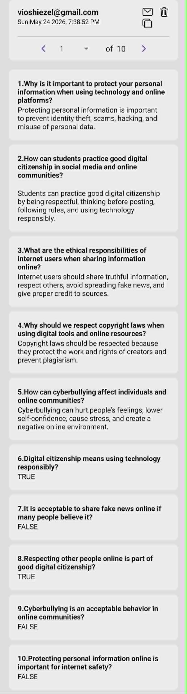
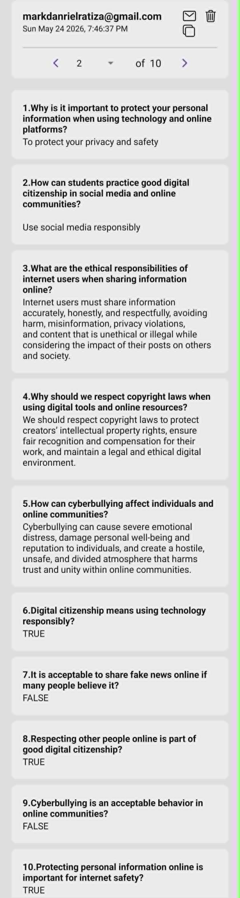
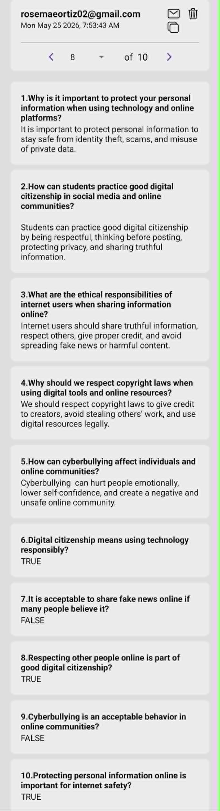
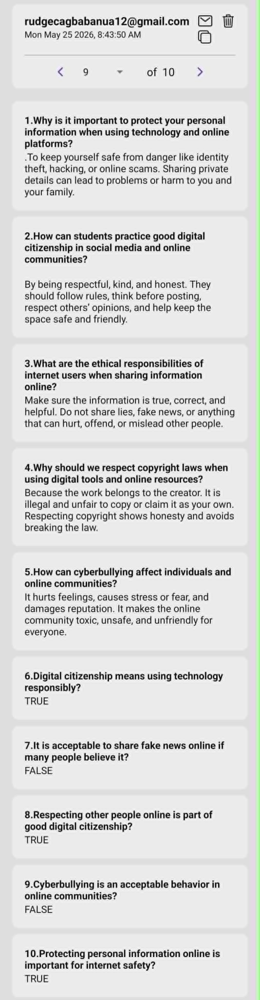
Student Feedback
& Performance
Peer evaluations, performance checks, and post-activity reflections captured during flexible PE sessions.
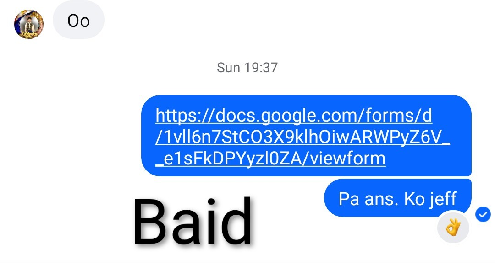
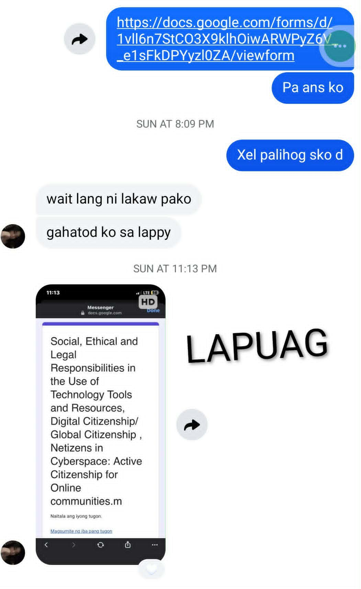
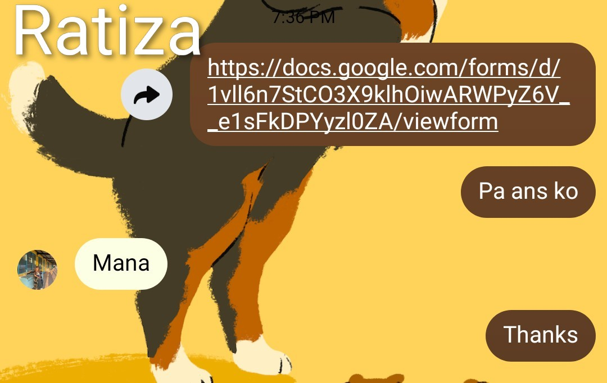
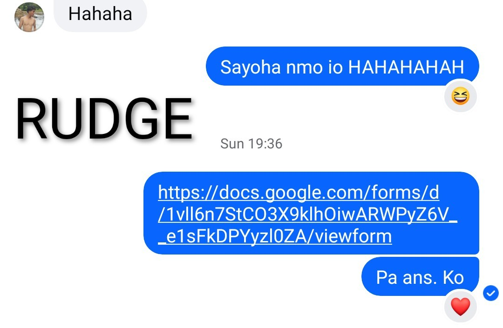
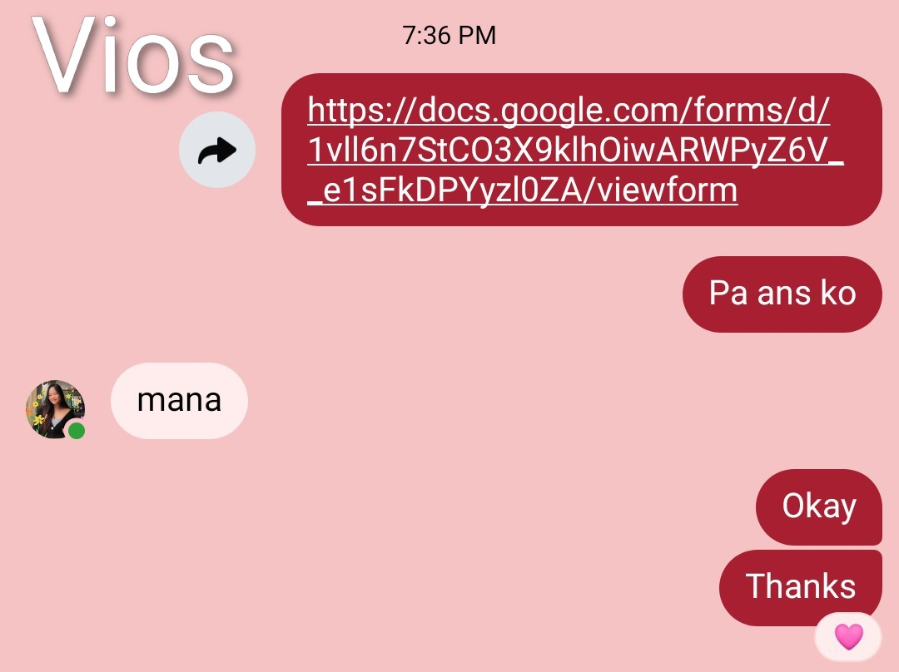
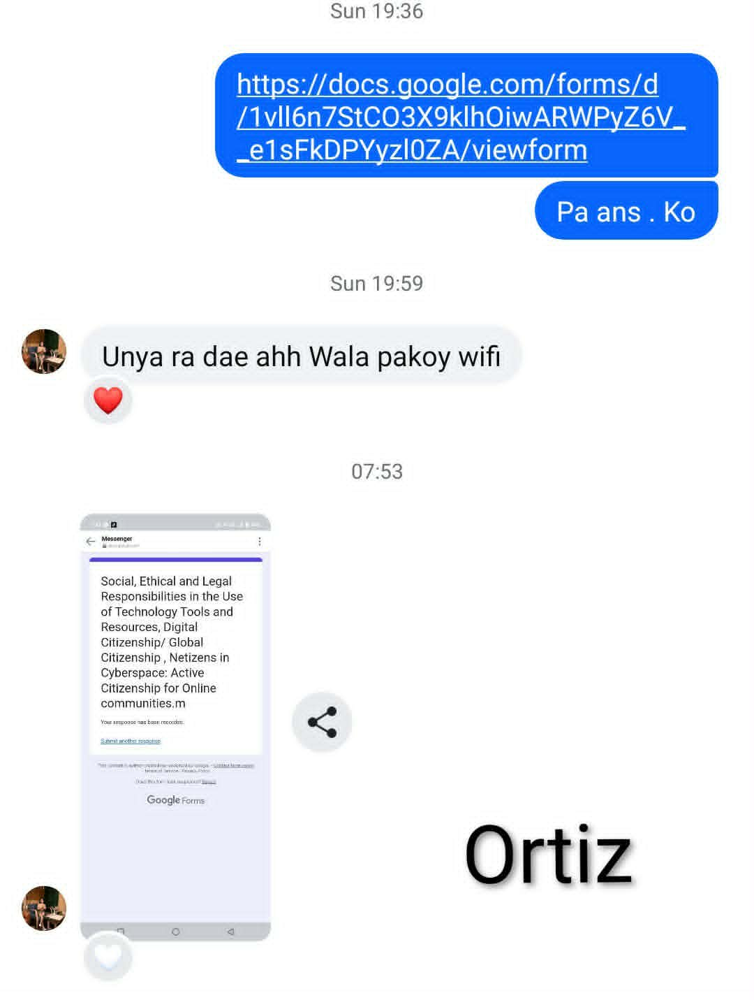
Flexible Learning
Justification
The written rationale explaining why flexible learning design was chosen and how it supports diverse learners in Physical Education.
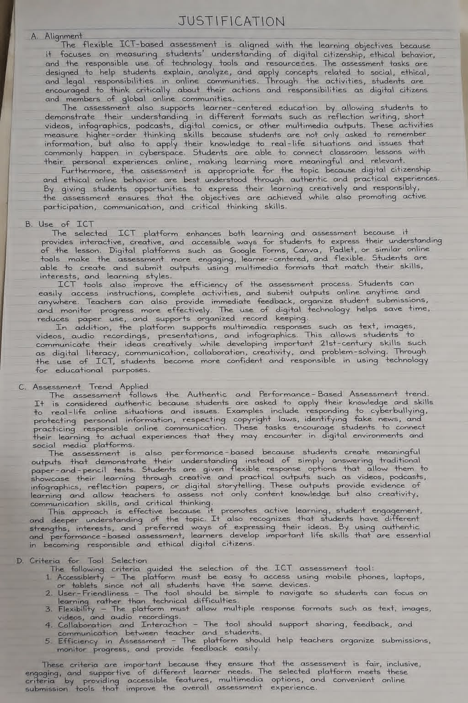
Assessment
Rubrics
The scoring criteria used to evaluate student performance across all flexible learning modes in Physical Education.
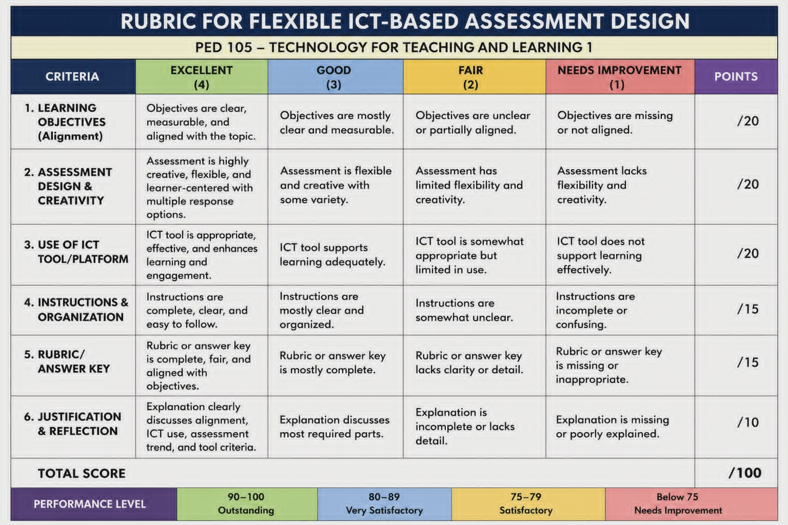
Flexible learning is not just a method — it's a mindset that puts every learner first.
— Jessa ParadiangLearning Without
Boundaries
How our demonstration showed flexible teaching in action.
The demonstration used a combination of traditional and digital tools — printed visual aids such as charts, posters, and flashcards alongside a projector and presentation slides — to support teaching and engagement.
This setup reflects flexible learning because it delivers information in multiple ways: visual, auditory, and interactive. The projector presents organized content clearly, while printed materials reinforce key ideas and make the lesson more engaging. A speaker enhances communication, ensuring everyone can hear and understand.
Overall, the integration of these tools shows how flexibility in teaching methods can improve understanding, participation, and learning outcomes. It demonstrates that combining both traditional and digital tools creates a more effective and inclusive learning environment — one that meets students wherever they are.
Five Ways Students
Can Learn PE
Explore how each flexible learning mode applies to Physical Education. Hover to discover details.
Face-to-Face
The traditional classroom setting with teacher and students physically present — ideal for skill demonstrations and real-time feedback.
- Direct observation and immediate correction
- Team sports, relay races, and group drills
- Full use of school equipment: cones, balls, hoops
- Instant feedback on technique and safety
Modular Distance
Students receive printed or digital modules and complete PE tasks at home at their own pace — the most common flexible mode in the Philippines.
- Printed activity sheets with illustrated exercises
- Self-paced workout plans and fitness logs
- Photo or video submissions for assessment
- Weekly modules aligned with PE competencies
Online Learning
PE is delivered through digital platforms where students access lessons, videos, and assessments online via video calls and fitness apps.
- Live or recorded workout video sessions
- Google Classroom for distributing tasks
- Kahoot for PE knowledge quizzes
- Fitness apps to log activity and progress
Blended Learning
A hybrid approach combining face-to-face and online or modular instruction — students attend some classes in person while completing other tasks digitally.
- In-school sessions for skills and sports
- Online modules for theory and reflection
- Flexible scheduling for diverse learners
- Combines digital and non-digital tools
Home-Based PE
PE activities specially designed for safe performance at home with no special equipment — using bodyweight exercises, dance, stretching, and family-friendly challenges.
- Bodyweight exercises: jumping jacks, planks, squats
- Dance workouts using YouTube tutorials
- Family-inclusive fitness challenges
- Journals to track daily physical activity